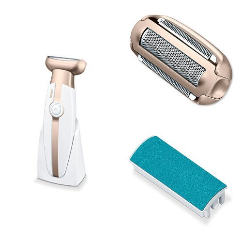

Epiliatoriai ir skustuvai - Panasonic Lietuva
2020.10.29 11:31
Paieška Main menu Gaminiai Televizoriai Kas suteikia galimybę mėgautis tikrais kino teatro pojūčiais? „Netflix“ sukalibruotasis režimas Holivudas jūsų namuose „Dolby Atmos®“ – kas tai? 4K Ultra HD OLED televizoriai Visi 4K Ultra HD OLED televizoriai 4K Ultra HD LED televizoriai Visi 4K Ultra HD LED televizoriai Full HD / HD televizoriai Visi Full HD / HD televizoriai Priedai Visi Priedai Fotoaparatai ir filmavimo kameros „LUMIX“ PASAULINĖS APŽVALGOS IR APDOVANOJIMAI VISO KADRO VAIZDO JUTIKLIS IR JOKIŲ KOMPOMISŲ Fotoaparatas, vertas pasirinkimo –
„Lumix G“ Pagarba ir meilė gyvūnams LUMIX sisteminiai fotoaparatai (DSLM) LUMIX S | viso kadro fotoaparatai LUMIX G | MFT fotoaparatai LUMIX Dėžutės formos kameros LUMIX skaitmeniniai fotoaparatai LUMIX LX | premium fotoaparatai LUMIX TZ | kelioniniai fotoaparatai LUMIX FZ | tarpinio modelio fotoaparatai LUMIX FT | atsparūs vandeniui fotoaparatai LUMIX objektyvai LUMIX S objektyvai | viso kadro LUMIX G objektyvai | MFT Priedai LUMIX S fotoaparatų priedai LUMIX G fotoaparatų priedai Vaizdo kamerų priedai Atminties kortelės Vaizdo kameros 4K Ultra HD vaizdo kameros Full HD vaizdo kameros Garsas „Panasonic“ vakarėliams sukurti TMAX garsiakalbiai Space Tune Blu-Ray ir DVD Blu-Ray grotuvai DVD grotuvai ir įrašantys DVD grotuvai Hi Fi PMX ir PM serija HC serija Didelio galingumo garso sistemos Urban Audio serija AKX serija MAX ir TMAX serija Pailgosios garso sistemos Visi Pailgosios garso sistemos Radijos ir magnetolos Visos radijos ir magnetolos Ausinės Ausinės – Pasirodys netrukus, 2020 m. „Panasonic“ sukurtos HTX serijos „Bluetooth®“ ausinės. SUŽADINS JŪSŲ JAUSMUS Didelės raiškos garsą atkuriančių ausinių kūrimo istorija Dedamos ant ausų Aukščiausios garso kokybės ausinės Belaidės Slopinančios triukšmą TV ausinės su ilgu laidu Visos Dedamos ant ausų Įstatomos į ausis Aukščiausios garso kokybės ausinės Belaidės Sportui Visos Įstatomos į ausis Technics Visos Technics Grožis ir sveikata „Panasonic“ plaukų džiovintuvai su „nanoeTM“ technologija Vyrų priežiūra – Barzdos ir plaukų priežiūra „Panasonic“ epiliatorius – švelni technologija jūsų grožiui „Panasonic“ burnos priežiūra – patikimas ir nuoseklus dantų valymas Moters grožis Epiliatoriai ir skustuvai Plaukų priežiūra Priedai Vyrų priežiūra Barzdaskutės Barzdos / Plaukų kirpikliai Nosies plaukelių kirpikliai Priedai Burnos priežiūra Dantų šepetėliai Burnos irigatoriai Priedai PRO kirpikliai Visi PRO kirpikliai Buitinė technika Mikrobangų krosnelės Mikrobangų krosnelės PRO Mikrobangų krosnelės Smulkūs virtuvės prietaisai Maišytuvas Virtuvės kombainas Namų kepyklėlė Sulčiaspaudės Oro valytuvai Oro valytuvai Telefonai DECT telefonai Visi DECT telefonai Mobilūs telefonai Visi Mobilūs telefonai Priedai Visi Priedai Verslas Komunikacijos sprendimai Kompiuterinės įrangos sprendimai Profesionalios fotografijos sprendimai Vaizdo sistemų sprendimai Saugumo sprendimai PRO kirpikliai Akcijos Palaikymas Kur pirkti FAQ Karjera Verslui Apie mus Įmonės profilis Naujienos Prekės ženklas Tvarumo iniciatyvos Karjera Technologijos ir dizainas [Pasaulinė svetainė] Ryšiai su investuotojais [Pasaulinė svetainė] Gaminiai Gaminiai Peržiūrėti visus produktus Uždaryti Televizoriai Kas suteikia galimybę mėgautis tikrais kino teatro pojūčiais? „Netflix“ sukalibruotasis režimas Holivudas jūsų namuose „Dolby Atmos®“ – kas tai? 4K Ultra HD OLED televizoriai Visi 4K Ultra HD OLED televizoriai 4K Ultra HD LED televizoriai Visi 4K Ultra HD LED televizoriai Full HD / HD televizoriai Visi Full HD / HD televizoriai Priedai Visi Priedai Fotoaparatai ir filmavimo kameros „LUMIX“ PASAULINĖS APŽVALGOS IR APDOVANOJIMAI VISO KADRO VAIZDO JUTIKLIS IR JOKIŲ KOMPOMISŲ Fotoaparatas, vertas pasirinkimo –
„Lumix G“ Pagarba ir meilė gyvūnams LUMIX sisteminiai fotoaparatai (DSLM) LUMIX S | viso kadro fotoaparatai LUMIX G | MFT fotoaparatai LUMIX Dėžutės formos kameros LUMIX skaitmeniniai fotoaparatai LUMIX LX | premium fotoaparatai LUMIX TZ | kelioniniai fotoaparatai LUMIX FZ | tarpinio modelio fotoaparatai LUMIX FT | atsparūs vandeniui fotoaparatai LUMIX objektyvai LUMIX S objektyvai | viso kadro LUMIX G objektyvai | MFT Priedai LUMIX S fotoaparatų priedai LUMIX G fotoaparatų priedai Vaizdo kamerų priedai Atminties kortelės Vaizdo kameros 4K Ultra HD vaizdo kameros Full HD vaizdo kameros Garsas „Panasonic“ vakarėliams sukurti TMAX garsiakalbiai Space Tune Blu-Ray ir DVD Blu-Ray grotuvai DVD grotuvai ir įrašantys DVD grotuvai Hi Fi PMX ir PM serija HC serija Didelio galingumo garso sistemos Urban Audio serija AKX serija MAX ir TMAX serija Pailgosios garso sistemos Visi Pailgosios garso sistemos Radijos ir magnetolos Visos radijos ir magnetolos Ausinės Ausinės – Pasirodys netrukus, 2020 m. „Panasonic“ sukurtos HTX serijos „Bluetooth®“ ausinės. SUŽADINS JŪSŲ JAUSMUS Didelės raiškos garsą atkuriančių ausinių kūrimo istorija Dedamos ant ausų Aukščiausios garso kokybės ausinės Belaidės Slopinančios triukšmą TV ausinės su ilgu laidu Visos Dedamos ant ausų Įstatomos į ausis Aukščiausios garso kokybės ausinės Belaidės Sportui Visos Įstatomos į ausis Technics Visos Technics Grožis ir sveikata „Panasonic“ plaukų džiovintuvai su „nanoeTM“ technologija Vyrų priežiūra – Barzdos ir plaukų priežiūra „Panasonic“ epiliatorius – švelni technologija jūsų grožiui „Panasonic“ burnos priežiūra – patikimas ir nuoseklus dantų valymas Moters grožis Epiliatoriai ir skustuvai Plaukų priežiūra Priedai Vyrų priežiūra Barzdaskutės Barzdos / Plaukų kirpikliai Nosies plaukelių kirpikliai Priedai Burnos priežiūra Dantų šepetėliai Burnos irigatoriai Priedai PRO kirpikliai Visi PRO kirpikliai Buitinė technika Mikrobangų krosnelės Mikrobangų krosnelės PRO Mikrobangų krosnelės Smulkūs virtuvės prietaisai Maišytuvas Virtuvės kombainas Namų kepyklėlė Sulčiaspaudės Oro valytuvai Oro valytuvai Telefonai DECT telefonai Visi DECT telefonai Mobilūs telefonai Visi Mobilūs telefonai Priedai Visi Priedai Verslas Verslas Uždaryti Komunikacijos sprendimai Kompiuterinės įrangos sprendimai Profesionalios fotografijos sprendimai Vaizdo sistemų sprendimai Saugumo sprendimai PRO kirpikliai Akcijos Palaikymas Kur pirkti FAQ Karjera Verslui Apie mus Įmonės profilis Naujienos Prekės ženklas Tvarumo iniciatyvos Karjera Technologijos ir dizainas [Pasaulinė svetainė] Ryšiai su investuotojais [Pasaulinė svetainė] https://myprofile.panasonic.eu/login?lang=en_GB&{0} /servlet/saml/logout4eu?{0}
Peržiūrėti viską: Epiliatoriai ir skustuvai
Reikia pagalbos renkantis? Sužinokite daugiauConsumer Grožis ir sveikata Moters grožis Grožis ir sveikata Moters grožis
Epiliatoriai ir skustuvai
Išsirinkite tinkamiausią jums
Reikia pagalbos renkantis? Sužinokite daugiauGrožis slypi detalėse
Modernios technologijos ir tradicijos
„Panasonic“ epiliatorius – švelni technologija jūsų grožiui
Patarimai, kad epiliacija būtų optimali
1 - 11 iš 11 rezultatų
ES-WF62
Nepriekaištingam Skutimui Kompaktiška Antakių Šukos Lanksčiai Judanti GalvutėŠvelnus ir tikslus skutimasis keliaujant
ES-WL50
Bikinio srities šukos Valymo šepetukas Paslankus tinklelis Dideli vidiniai ašmenysDabar efektyvus viso kūno plaukų skutimas ir kirpimas galimas naudojant vieną įrenginį. Rezultatas – dideli ašmenys yra švelnūs odai ir užtikrina greitą ir glotnų skutimą.
ES-EL9A
Įkrovimas per 1 val. 3 greičio nustatymai 30 min. belaidis naudojimas Bikinio srities šukos„Panasonic“ šlapio / sauso tipo epiliatorius pasižymi visiškai nauja forma su 30 % platesne* galvute, ir dviem diskais su 60 gnybtukų, kuriais galima greitai, efektyviai pašalinti plaukus. Naujoji galvutė pasisuka 90°, kad atkartotų jūsų kūno įlinkius ir itin švariai pašalintų plaukus. * Lyginant su įprasta ED serija.
ES-EL8A
Įkrovimas per 1 val. 3 greičio nustatymai 30 min. belaidis naudojimas Bikinio srities šukos30 % platesnė galvutė, pasikreipianti 90°, prisiderina prie kūno formos. Prie jos prisideda dviejų diskų sistema su 60 gnybtukų – oda darosi glotnesnė kiekvienu perbraukimu. Taip pat yra keletas naudingų galvučių, įskaitant švelnų gaubtelį jautrioms vietoms, mažesnę epiliavimo galvutę bikinio linijai ir pažastims, skutimo ir kirpimo galvutes, o taip pat bikini šukas bei priedus pėdų priežiūrai. Taip pat pridedamas patogus nešiojimo maišelis bei valymo šepetėlis.
ES-EL7A
Įkrovimas per 1 val. 3 greičio nustatymai 30 min. belaidis naudojimas Bikinio srities šukos„Panasonic“ šlapio / sauso tipo epiliatorius pasižymi visiškai nauja forma su 30 % platesne* galvute, ir dviem diskais su 60 gnybtukų, kuriais galima greitai, efektyviai pašalinti plaukus. Naujoji galvutė pasisuka 90°, kad atkartotų jūsų kūno įlinkius ir itin švariai pašalintų plaukus. * Lyginant su įprasta ED serija.
ES-EL3A
Įkrovimas per 1 val. 3 greičio nustatymai 30 min. belaidis naudojimas Valymo šepetukas30 % platesnė galvutė, pasikreipianti 90°, prisiderina prie kūno formos. Prie jos prisideda dviejų diskų sistema su 60 gnybtukų – oda darosi glotnesnė kiekvienu perbraukimu. Be to, komplekte yra švelnus gaubtelis, skirtas jautrioms vietoms patogiai depiliuoti, ir patogus nešiojimo maišelis su valymo šepetėliu.
ES-EL2A
Įkrovimas per 1 val. 3 greičio nustatymai 30 min. belaidis naudojimas Valymo šepetukas30 % platesnė galvutė, pasikreipianti 90°, prisiderina prie kūno formos. Ir dviejų diskų sistema su 60 gnybtukų – oda darosi glotnesnė kiekvienu perbraukimu. Pridedamas patogus nešiojimo maišelis su valymo šepetėliu.
ES-ED93
įkrovimas per 1 val. 30 min. naudojimo trukmė valymo šepetukas be laidoGalima naudoti vonioje ir duše
ES-ED53
įkrovimas per 1 val. 30 min. naudojimo trukmė valymo šepetukas be laidoGreitas ir švelnus epiliavimas vonioje ir duše
ES-ED23
įkrovimas per 1 val. 30 min. naudojimo trukmė valymo šepetukas be laidoGreitas ir švelnus epiliavimas vonioje ir duše
ES-ED20
Įkrovimas per 1 val. 2 greičiai 30 min. trukmės naudojimas Valymo šepetukasŠlapiu / sausu režimu veikiantis epiliatorius
Kitos kategorijos
Gaminiai
Namų pramogos Televizoriai Fotoaparatai ir filmavimo kameros LUMIX skaitmeniniai aparatai LUMIX G objektyvai | MFT Vaizdo kameros Video kamerų priedai LUMIX S | viso kadro fotoaparatai LUMIX S objektyvai | viso kadro LUMIX S fotoaparatų priedai Atminties kortelės LUMIX G | MFT fotoaparatai LUMIX G fotoaparatų priedai Vaizdo kamerų priedai LUMIX Dėžutės formos kameros Garsas Blu-Ray ir DVD Namų kino sistemos Belaidžių garsiakalbių sistemos Pailgosios garso sistemos Hi Fi Priedai Radijos ir magnetolos Didelio galingumo garso sistemos Ausinės Dedamos ant ausų Įstatomos į ausis Technics Buitinė technika Mikrobangų krosnelės Smulkūs virtuvės prietaisai Oro valytuvai Grožis ir sveikata Moters grožis Vyrų priežiūra Burnos priežiūra Telefonai Telefonai Archive Buitinė technika Namų pramogos Ausinės Garsas Fotoaparatai ir filmavimo kameros Telefonai Grožis ir sveikata Spausdinti Regionas / ŠalisCopyright © 2020 Panasonic Marketing Europe GmbH
Apie mus Privatumo politika Slapukų politika Sąlygos ir nuostatos Svetainės žemėlapis Kreipkitės į mus „Panasonic“ 100 metų sukaktis FAQ